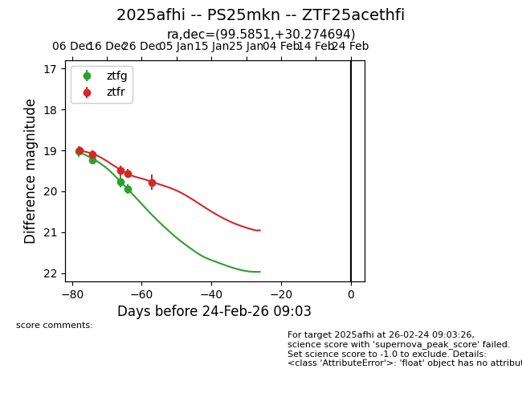
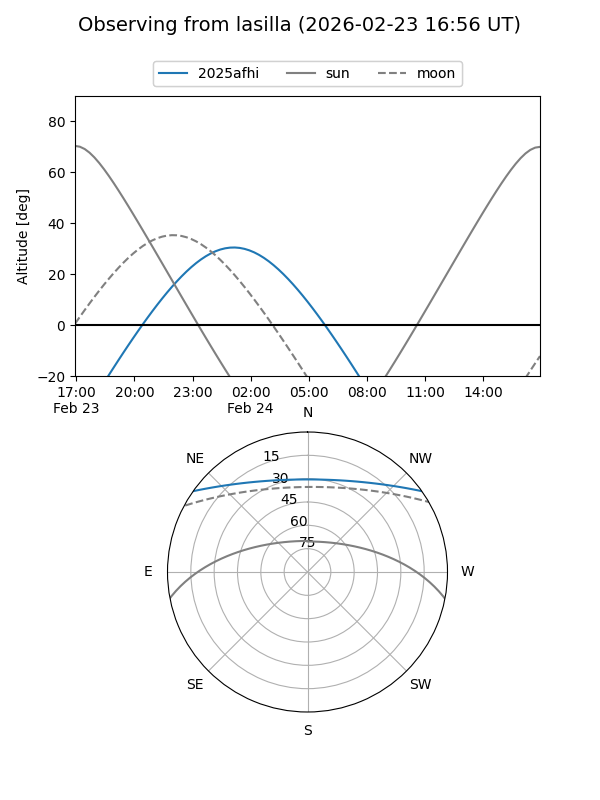
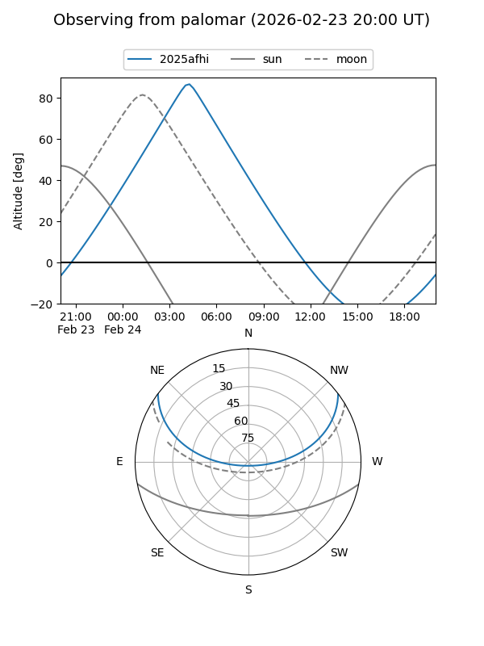

2025afhi
Target 2025afhi at 2025-12-20 09:44
Aliases and brokers:
FINK: fink-portal.org/ZTF25acethfi
Lasair: lasair-ztf.lsst.ac.uk/objects/ZTF25acethfi
ALeRCE: alerce.online/object/ZTF25acethfi
TNS: wis-tns.org/object/2025afhi
YSE: ziggy.ucolick.org/yse/transient_detail/2025afhi
alt names
ZTF25acethfi (ztf,fink_ztf)
2025afhi (tns,yse)
Coordinates:
equatorial (ra, dec) = 99.5851,+30.27469
equatorial (HMS+DMS) = 06:38:20.43,+30:16:28.90
galactic (l, b) = (184.2764,+10.71838)
Flags:
Photometry:
last ztfg=19.76, ztfr=19.49
3 ztfg, 3 ztfr detections
Lightcurve

Visibility


Additional plots